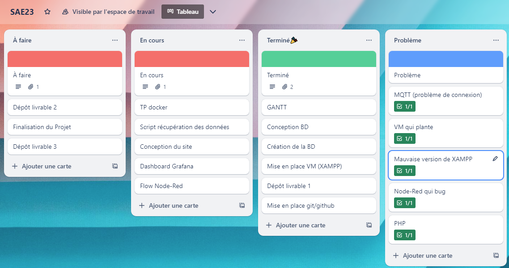
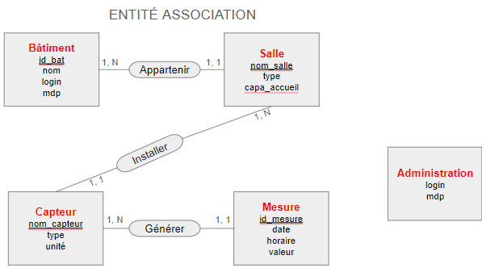
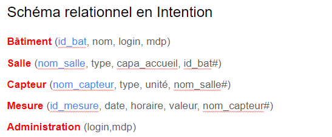
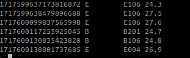
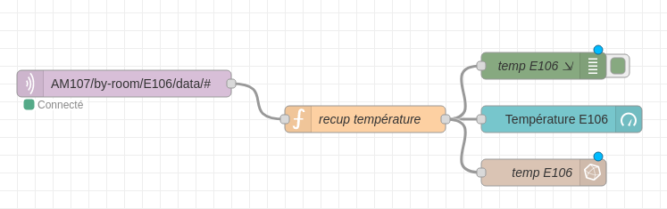
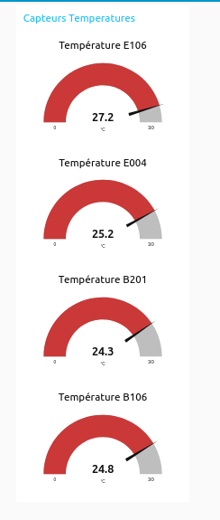
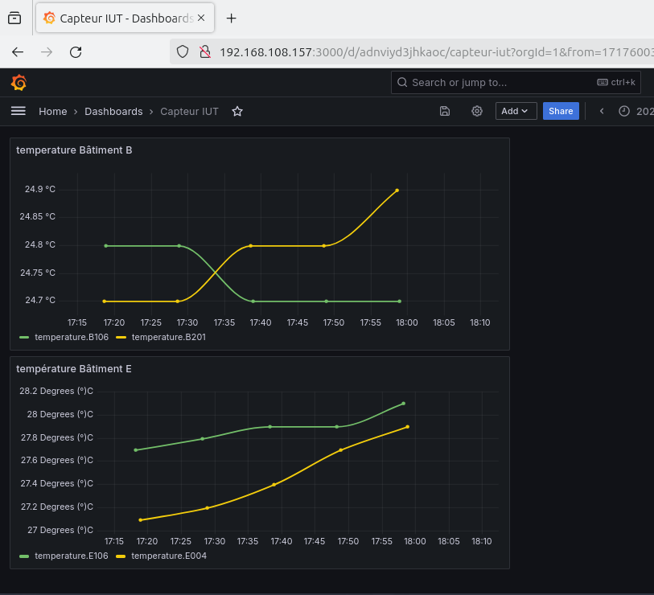
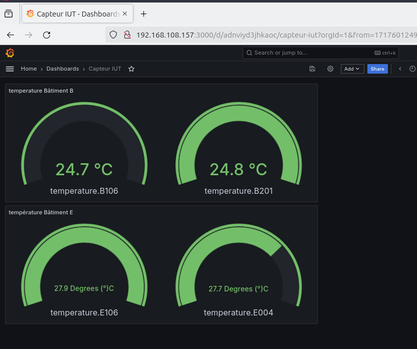
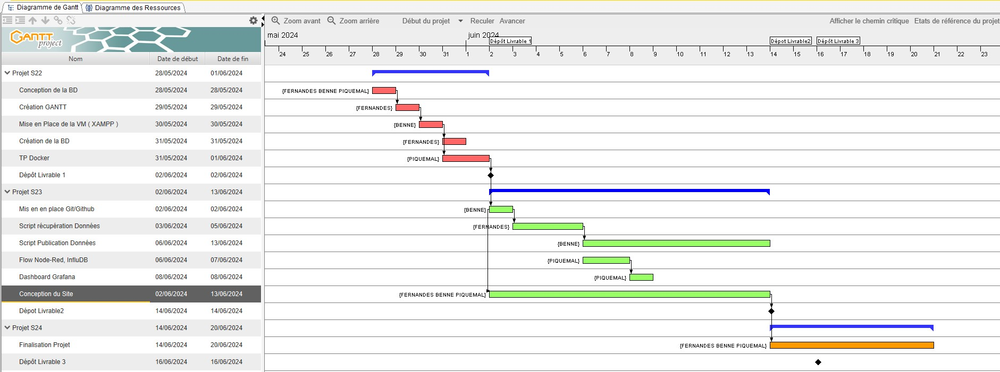

Proposition pour les gestionnaires de bâtiments de l'IUT
Objectif :
Créer une interface conviviale et simple pour la visualisation des données de capteurs.
Détails :
- Gestion des Bâtiments :
- Deux bâtiments, chacun ayant un gestionnaire avec un compte (login et mot de passe).
- Capteurs :
- Deux capteurs (types au choix) par bâtiment.
- Visualisation des Données :
- Tableau de bord Grafana affichant les données des quatre capteurs.
- Base de Données :
- Conception et utilisation d'une base de données MySQL.
- Site Web Dynamique :
- Hébergement sur un serveur LAMP (Linux, Apache, MySQL, PHP).
- Présentation des données et des métriques sous forme de tableau.
- Administration de la base de données via un formulaire sur le site, accessible avec un compte administrateur (login et mot de passe).
Commencement du projet :
Pour débuter le projet, il nous a fallu faire un diagramme de GANTT afin de nous répartir les différentes tâches à effectuer au cours de cette SAE.

Grâce à ce diagramme de GANTT que nous avons divisé sur les trois semaines (le temps du projet), cela nous a permis de mieux visualiser les tâches à faire et de nous les répartir selon nos préférences et nos compétences.
Une fois le diagramme de GANTT terminé, nous avons fait un tri pour suivre l’avancement du projet.
Ce TRELLO nous a permis de suivre l’avancement du projet avec des tâches à effectuer et à faire ainsi que de lister nos différents problèmes et solutions lors du projet.
Nous avons aussi utilisé Google Drive pour partager de nombreux éléments comme des captures d’écran et le compte rendu.
Nous avons aussi utilisé GitHub, ce qui nous a permis de faire les sauvegardes de notre site, et que tout le monde du groupe ait accès à ses données.
Livrable 1
Pour le livrable 1, il nous a fallu commencer les schémas de conception de la base de données.
 Livrable 2
Ensuite, pour le livrable numéro deux, il nous a fallu faire un flowchart ainsi qu’un Dashboard Grafana. Nous avons effectué ce travail sur une machine virtuelle, mais avant toute chose, nous l’avons paramétrée, configurée et avons installé des logiciels selon le TP donné.
Nous avons d'abord paramétré le Nodered pour une salle pour un test, puis sur 4 salle de l'IUT.
Nous avons dabors vérifier que nous obetenons bien les valeurs souhaiter dans la base de donnée InfluxDB
Voici le resultat pour une salle de tP
Ensuite nous l'avons recopier 4x en changent les parametres de récupérations pour les differentes salles
Voici le resultat obtenue :
Pour terminer sur Graphana, aprés l'avoir configurer nous obtenons un deux graphe ( un pour chauqe bâtiment, ainsi que les jauges de températures
 GANTT Final :
Synthèse personnelle
- FERNANDES
- Pour ma part, j’ai effectué la post-installation de la machine virtuelle ainsi que l’installation de docker. J’ai aussi installé et sécurisé le serveur XAMPP. Avec mon collègue Piquemal, nous avons effectué le Node red ainsi que InfluxDB. J’ai également participé à la création du site Web et à la récupération de données.
- Je trouve que ce projet rassemble beaucoup de compétences et connaissances acquises au cours du deuxième semestre. Le temps pour effectuer ce projet a été, je trouve, assez court, mais je pense que cela est dû aux nombreux problèmes rencontrés en début de projet. Pour terminer, je trouve que l’ensemble de l’équipe a été compétente, et nous avons pu nous entraider entre nous.
- BENNE
- Durant cette saé, j'ai réalisé divers travaux. Pour commencer j'ai participé activement à la préparation du 1er livrable (conception de la BD) car je savais que par la suite c'est moi qui allait la créer. Dans un second temps j'ai également participé à la mise en place d'InfluxDB. Pour finir, j'ai fait pas mal de PHP pour les différentes pages de notre site web.
- PIQUEMAL
- Lors de la réalisation de cette SAE 23, j’ai su développer mes compétences de travail en équipe et de gestion de projet. Pour le niveau technique, cette SAE a été assez compliquée, regroupant des matières ou je n’était pas forcément super à l’aise. Finalement, avec de la persévérance et de l’implication, j’ai su réaliser les tâches qui m'étaient attribuées, et finir dans les temps. J’ai rencontré pas mal de difficultés, mais grâce à ça j’ai pu m’améliorer.
Problèmes rencontrés / Solutions proposées
Tout au long de cette saé, nous avons rencontrés de multiples problèmes. Nous avons pu résoudre la plupart, mais certains étaient très complexes et nous ont fait perdre beaucoup de temps. Par exemple plusieurs fois la VM bugguait et par conséquent certains services ne fonctionnaient pas. On essayait donc de trouver des solutions pendant des heures pour rien. On ne sait pas pourquoi mais les 3/4 du temps le problème était résolu en redémarrant la VM, mais d'après d'autres camarades de promo, la VM centos n'était pas vraiment la meilleure à utiliser. Nous avons également réalisé une erreur bête au début à la création de la VM : nou n'avions pas cliqué sur le disque d'installation de l'OS qui était sur le bureau de la VM. Cela à amené à de nombreux problèmes d'installations de xampp ou autres.
Degré de satisfaction du cahier des charges
En ce qui concerne le cahier des charges, nous avons essayé de le respecter au maximum. Cependant, quelques petits détails sur le site n'ont pas pu être terminés dans le temps imparti.